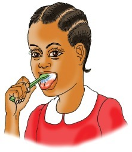
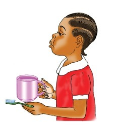
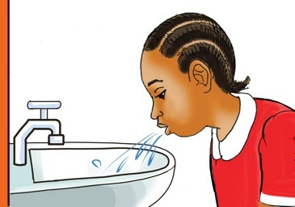
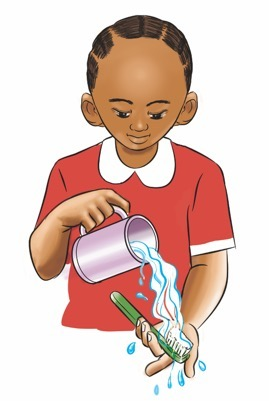
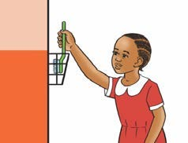

3Step 3
A pupil gently cleaning her tongue with a toothbrush.I clean my tongue.
4Step 4
A pupil rinsing her mouth with clean water from a mug.I rinse my mouth using clean and safe water.
5Step 5
A pupil spitting toothpaste and water into a sink.I spit toothpaste and water from my mouth into a sink.
6Step 6
A pupil washing a toothbrush under clean running water.I clean my toothbrush using clean water.
7Step 7
A pupil putting a clean toothbrush in a safe wall holder.I keep my toothbrush in a clean and safe place.

Question
What have you learnt from pictures 1-7?
Activity 1
(a) Watch videos on the internet showing the steps for
cleaning the mouth.
(b) Clean your mouth by following the steps you have learnt.